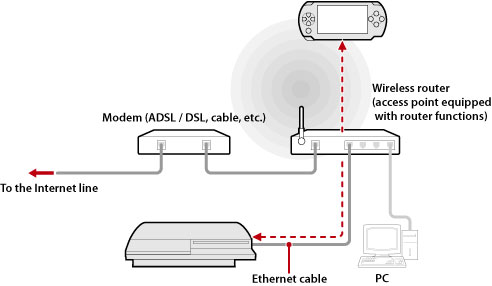

Network > Using remote play (via an access point)
Using remote play (via an access point)
Connect the PS3™ system to an access point using an Ethernet cable and use the PSP™ system's wireless LAN feature to connect to the PS3™ system through the access point.
Example of a common configuration

Hints
- A wireless router is a device that adds access point functionality to a router. An access point is a device that allows you to connect to a network wirelessly. A router is a device used when sharing one Internet connection among multiple devices.
- A modem may be equipped with router functionality. Connect the PS3™ system to a device that is equipped with router functionality.
- If the access point and modem both are equipped with router functionality, turn the router functionality off on one of these devices. The PS3™ system and PSP™ system must be connected within the same network. If two or more routers are used at the same time, the PS3™ system and PSP™ system may be connected to separate networks and you may not be able to use remote play.
Preparing for use (PS3™ system and PSP™ system)
To use remote play for the first time, you must register (pair) the PSP™ system with the PS3™ system. Register the system under  (Settings) >
(Settings) >  (Remote Play Settings) > [Register Device].
(Remote Play Settings) > [Register Device].
Preparing for use (PSP™ system)
Create a network connection for connecting the PSP™ system to an access point. If the PSP™ system already has a saved network connection for use in connecting to a network via an access point, you do not have to create a new network connection. For details on creating a network connection, refer to the user's guide for the PSP™ system.
Using remote play
1. |
On the PS3™ system, select |
|---|---|
2. |
On the PSP™ system, select |
3. |
Select [Connect via Private Network]. |
4. |
From the list of connections, select the connection for the access point to be used for remote play.
If the connection is successful, the PS3™ system screen will be displayed on the PSP™ system. |
 (Network) >
(Network) >  (Remote Play).
(Remote Play). (Remote Play).
(Remote Play).
Hints
- Remote play can be used within range of the access point's signal.
- If you enable the remote start setting on your PS3™ system, you can set your system to be turned on automatically (Wake on LAN). In this case, you do not have to perform step 1 above. For details, see (Settings) > (Remote Play Settings) > [Remote Start] in this guide.
Quitting remote play
Press the PS button (HOME button) on the PSP™ system, and then select [Quit Remote Play] > [Quit and Turn Off the PS3™ System].
Hint
Select [Quit Without Turning Off the PS3™ System] if you are using your PS3™ system to copy files, or to perform background downloading and other tasks that require you to keep your system on.